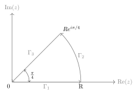
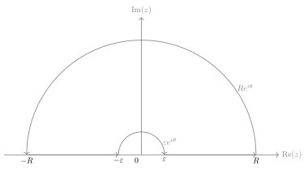
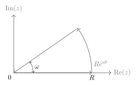

Chapter 2 Cauchy's Theorem
Exercise
Exercise 2.1
Prove that
$$
\int_{0}^{\infty} \sin(x^{2}) \, \mathrm{d}x =\int_{0}^{\infty} \cos(x^{2}) \, \mathrm{d}x =\frac{\sqrt{ 2\pi }}{4}.
$$
Proof:

{ align=center }Consider \(f(z)=e^{-z^{2}}\) and the contour in the picture above, then
$$
0=\int_{0}^{R} e^{-x^{2}} \, \mathrm{d}x +\int_{0}^{\pi/4} e^{-R^{2}e^{2i\theta}}iRe^{i\theta} \, \mathrm{d}\theta+\int_{R}^{0} e^{-x^{2}e^{i\pi/2}}e^{i\pi/4} \, \mathrm{d}x .
$$
Note that
$$
\begin{align}
\lim_{ R \to \infty } \int_{0}^{R} e^{-x^{2}} \, \mathrm{d}x & =\int_{0}^{\infty} e^{-x^{2}} \, \mathrm{d}x =\frac{\sqrt{ \pi }}{2}, \
\lim_{ R \to \infty } \int_{0}^{R} e^{-x^{2}i} \, \mathrm{d}x & =\int_{0}^{\infty} \cos(x^{2})-i\sin(x^{2}) \, \mathrm{d}x .
\end{align}
$$
Also
$$
\begin{align}
\left\lvert \int_{0}^{\pi/4} e^{-R^{2}e^{2i\theta}}iR e^{i\theta} \, \mathrm{d}\theta \right\rvert & \leqslant \int_{0}^{\pi/4} e^{-R^{2}\cos 2\theta} \, \mathrm{d}\theta=\frac{1}{2}\int_{0}^{\pi/2} e^{-R^{2}\sin\theta} \, \mathrm{d}\theta\
& \leqslant \frac{1}{2}\int_{0}^{\pi/2}e^{-R^{2}2\theta/\pi} \, \mathrm{d}\theta\leqslant \frac{\pi}{2R^{2}}\to 0.
\end{align}
$$
Hence
$$
\int_{0}^{\infty} \cos(x^{2})-i\sin (x^{2}) \, \mathrm{d}x =e^{-i\pi/4} \frac{\sqrt{ \pi }}{2}.
$$
Exercise 2.2
Show that
$$
\int_{0}^{\infty} \frac{\sin x}{x} \, \mathrm{d}x =\frac{\pi}{2}.
$$
Proof: Consider \(f(z)=\frac{e^{iz}-1}{z}\) and the contour

Then
$$
0=\int_{\lvert x \rvert \in[\varepsilon,R]}^{} \frac{e^{ix}-1}{x} \, \mathrm{d}x + i\int_{0}^{\pi} (e^{iRe^{i\theta}} -1)\, \mathrm{d}\theta-i\int_{0}^{\pi} (e^{i \varepsilon e^{i\theta}}-1) \, \mathrm{d}\theta.
$$
Note that
$$
\int_{\lvert x \rvert \in[\varepsilon,R]}^{} \frac{e^{ix}-1}{x} \, \mathrm{d}x =\int_{\varepsilon}^{R} \frac{\sin x}{x} \, \mathrm{d}x \to \int_{0}^{\infty} \frac{\sin x}{x} \, \mathrm{d}x .
$$
Similar to Exercise 2.1,
$$
\left\lvert \int_{0}^{\pi} e^{i R e^{i\theta}} \, \mathrm{d}\theta \right\rvert \leqslant O\left( \frac{1}{R} \right)\to 0.
$$
Also, by Lebesgue controlled convergence,
$$
\lim_{ \varepsilon \to 0 } \int_{0}^{\pi} (e^{i\varepsilon e^{i\theta}}-1) \, \mathrm{d}\theta=0.
$$
Hence
$$
\int_{0}^{\infty} \frac{\sin x}{x} \, \mathrm{d}x =\frac{\pi}{2}.
$$
Exercise 2.3
For \(a,b>0\), calculate
$$
\int_{0}^{\infty} e^{-ax}\cos bx \, \mathrm{d}x ,\int_{0}^{\infty} e^{-ax}\sin bx \, \mathrm{d}x .
$$
Solution: Let \(a+ib=Ae^{i\omega}\), where \(A>0\), and consider \(f(z)=e^{-Az}\) and the contour

Then
$$
0=\int_{0}^{R} e^{-Ax} \, \mathrm{d}x +\int_{0}^{\omega} e^{-AR e^{i\theta}} \, iRe^{i\theta}\mathrm{d}\theta +\int_{0}^{R} e^{-Axe^{i\theta}}e^{i\theta} \, \mathrm{d}x
$$
Note that
$$
\begin{align}
\lim_{ R \to \infty } \int_{0}^{R} e^{-Ax} \, \mathrm{d}x & = -\frac{1}{A}e^{-Ax}\Big\vert_{0}^{\infty}=\frac{1}{A}. \
\lim_{ R \to \infty } \int_{0}^{R} e^{-Axe^{i\theta}}e^{i\theta} \, \mathrm{d}x & =e^{i\theta}\int_{0}^{\infty} e^{-(a+ib)x} \, \mathrm{d}x .
\end{align}
$$
Also
$$
\left\lvert \int_{0}^{\omega} e^{-AR e^{i\theta}}iR e^{i\theta} \, \mathrm{d}\theta \right\rvert \leqslant R \int_{0}^{\omega} e^{-AR\cos\theta} \, \mathrm{d}\theta\leqslant R\omega e^{-AR\cos\omega} \to 0.
$$
Hence
$$
\int_{0}^{\infty} e^{-(a+ib)x} \, \mathrm{d}x =\frac{1}{a+ib},
$$
so
$$
\int_{0}^{\infty} e^{-ax}\cos bx \, \mathrm{d}x =\frac{a}{a^{2}+b^{2}},\int_{0}^{\infty} e^{-ax}\sin bx \, \mathrm{d}x =\frac{b}{a^{2}+b^{2}}.
$$
Exercise 2.4
Prove that for any \(\xi \in \mathbb{C}\),
$$
e^{-\pi\xi^{2}}=\int_{-\infty}^{\infty} e^{-\pi x^{2}}e^{2\pi i x \xi} \, \mathrm{d}x.
$$
Proof: Let \(\xi=u+iv\), then
$$
\int_{\mathbb{R}}^{} e^{-\pi(x+i\xi)^{2}} \, \mathrm{d}x =0\iff \int_{\mathbb{R}}^{} e^{-\pi(x+iu)^{2}} \, \mathrm{d}x =0,
$$
which is already proved in Example 2.3.1.
Exercise 2.5
If \(f\) is continuously complex differentiable in an open set \(U\) containing the triangle \(T\), prove
$$
\int_{\partial T}^{} f(z) \, \mathrm{d}z=0
$$
using Green theorem
$$
\int_{\partial T} Fdx+Gdy =\int_{T}^{} \left( \frac{\partial G}{\partial x}-\frac{\partial F}{\partial y} \right) \, \mathrm{d}x\mathrm{d}y .
$$
Proof: Let \(f=u+iv\), then
$$
\begin{align}
\int_{\partial F}^{} f(z) \, \mathrm{d}z & =\int_{\partial T}^{} (u+iv) \, (\mathrm{d}x+i\mathrm{d}y) \
& =\int_{\partial T}^{} u \, \mathrm{d}x -v\,\mathrm{d}y+i\int_{\partial T}^{} u \, \mathrm{d}y+v\,\mathrm{d}x \
& =\int_{T}^{} \left( \frac{\partial u}{\partial y}+\frac{\partial v}{\partial x} \right) \, \mathrm{d}x \mathrm{d}y+i\int_{T}^{} \left( \frac{\partial v}{\partial y}-\frac{\partial u}{\partial x} \right) \, \mathrm{d}x \mathrm{d}y=0.
\end{align}
$$
Exercise 2.6
Let \(\Omega\) be an open subset of \(\mathbb{C}\) and \(T\subset\Omega\) be a triangle whose interior is also contained in \(\Omega\). Suppose that \(f\) is a function holomorphic in \(\Omega\) except possibly at a point \(\omega\) inside \(T\). Prove that if \(f\) is bounded near \(\omega\), then
$$
\int_{T}f(z)\,\mathrm{d}z=0.
$$
Proof: Let \(T_{0}=T\), and define \(T_{n}\) as follows: divide \(T_{n-1}\) into four triangles, and denote the one containing \(w\) as \(T_{n}\). Then \(\mathrm{diam}T_{n}\to 0\) so for \(n\) large enough, \(T_{n}\subset O_{w}\) where \(O_{w}\) is the neighborhood of \(w\) where \(f\) is bounded by \(M\). By Goursat’s theorem,
$$
\left\lvert \int_{T}f(z)\,\mathrm{d}z \right\rvert = \left\lvert \int_{T_{n}}^{} f(z) \, \mathrm{d}z \right\rvert \leqslant M\mathrm{length}(T_{n})\to 0.
$$
Hence
$$
\int_{T}^{} f(z) \, \mathrm{d}z=0.
$$
Exercise 2.7
Suppose \(f:\mathbb{D}\to \mathbb{C}\) is holomorphic. Show that the diameter \(d=\sup_{z,w\in \mathbb{D}}{\lvert f(z)-f(w) \rvert}\) of \(f(\mathbb{D})\) satisfies
$$
2\lvert f^{\prime}(0) \rvert \leqslant d.
$$
Moreover, it can be shown that equality holds precisely when \(f(z)=a_{0}+a_{1}z\).
Proof: By the Cauchy integral formula, for any \(r\in(0,1)\),
$$
2f^{\prime}(0)=\frac{1}{\pi i}\int_{\lvert \zeta \rvert =r}^{} \frac{f(\zeta)}{\zeta^{2}} \, \mathrm{d}\zeta =\frac{1}{2\pi i}\int_{\lvert \zeta \rvert =r}^{} \frac{f(\zeta)-f(-\zeta)}{\zeta^{2}} \, \mathrm{d}\zeta.
$$
Hence
$$
2\lvert f^{\prime}(0) \rvert \leqslant \frac{1}{2\pi} \int_{0}^{2\pi} \frac{d}{r} \, \mathrm{d}x =\frac{d}{r}.
$$
Let \(r\to 1\) then \(2\lvert f^{\prime}(0) \rvert\leqslant d\).
The equality condition can be proved by the Schwarz lemma.
Exercise 2.8
If \(f\) is a holomorphic function on the strip \(-1<y<1,x\in \mathbb{R}\) with
$$
\lvert f(z) \rvert \leqslant A(1+\lvert z \rvert )^{\eta},\,\eta\text{ a fixed real number}
$$
for all \(z\). Show that for each integer \(n\geqslant 0\), there exists \(A_{n}\geqslant 0\) so that
$$
\lvert f^{(n)}(x) \rvert \leqslant A_{n}(1+\lvert x \rvert )^{\eta},\,\forall x\in \mathbb{R}.
$$
Proof: By Cauchy’s inequality:
$$
\lvert f^{(n)}(x) \rvert \leqslant 2^{n}n!\sup_{\lvert \zeta-x \rvert =1 /2}{\lvert f(\zeta) \rvert }\leqslant 2^{n}n!A\sup_{\lvert \zeta-x \rvert =1 /2}{(1+\lvert \zeta \rvert )^{\eta}}\leqslant 2^{n}n! \left( \frac{3}{2} \right)^{\eta}A(1+\lvert x \rvert )^{\eta}.
$$
(Since \(1+\lvert \zeta \rvert\leqslant \lvert x \rvert+3 /2\leqslant \frac{3}{2}(1+\lvert x \rvert)\).)
Exercise 2.9
Let \(\Omega\) be a bounded open subset of \(\mathbb{C}\), and \(\varphi:\Omega\to \Omega\) a holomorphic function. Prove that if there exists a point \(z_{0}\in\Omega\) such that
$$
\varphi(z_{0})=z_{0},\,\text{and } \varphi^{\prime}(z_{0})=1
$$
then \(\varphi\) is linear.
Proof: We can assume \(z_{0}=0\), otherwise consider \(\psi(z)=\varphi(z+z_{0})-z_{0}\) and \(\Omega^{\prime}=\Omega-z_{0}\). Let \(\varphi(z)=z+a_{n}z^{n}+O(z^{n+1})\), and \(\varphi_{k}=\varphi \circ\cdots\circ\varphi\), then by Cauchy’s inequality,
$$
k\lvert a_{n} \rvert =\lvert \varphi_{k}^{(n)}(0) \rvert \leqslant \frac{n!M}{r^{n}}.
$$
where \(M=\sup_{z\in\Omega}{\lvert z \rvert}\). Hence \(\lvert a_{n} \rvert \leqslant n!M /r^{n}k\), and let \(k\to \infty\) we obtain \(a_{n}=0\). Hence \(\varphi\) is linear.
Exercise 2.10
Weierstrass’s theorem states that a continuous function on \([0,1]\) can be uniformly approximated by polynomials. Can every continuous function on the closed unit disc be approximated uniformly by polynomials in the variable \(z\)?
Solution: No. The uniform limit of polynomials is holomorphic, but some continuous functions are not holomorphic (like \(\mathrm{Re}(z)\)).
Exercise 2.11
Let \(f\) be a holomorphic function on the disc \(D_{R_{0}}\) centered at the origin and of radius \(R_{0}\).
(a) Prove that whenever \(0<R<R_{0}\) and \(\lvert z \rvert<R\), then
$$
f(z)=\frac{1}{2\pi}\int_{0}^{2\pi} f(Re^{i\varphi})\mathrm{Re}\left( \frac{R e^{i\varphi}+z}{R e^{i\varphi}-z} \right) \, \mathrm{d}\varphi.
$$
Proof: Let \(\zeta=R e^{i\varphi}\), then
$$
\mathrm{Re}\left( \frac{\zeta-z}{\zeta-z} \right)=\frac{\lvert \zeta \rvert ^{2}-\lvert z \rvert^{2} }{\lvert \zeta-z \rvert ^{2}}= \frac{\zeta}{\zeta-z}+\frac{\bar{z}}{\bar{\zeta}-\bar{z}}.
$$
Note that
$$
f(z)=\frac{1}{2\pi} \int_{0}^{2\pi} f(\zeta) \frac{\zeta}{\zeta-z} \, \mathrm{d}\varphi
$$
and since \(R^{2} /\bar{z}\) is outside \(D_{R_{0}}\),
$$
0=\frac{1}{2\pi}\int_{0}^{2\pi} f(\zeta) \frac{\zeta}{\zeta-R^{2} /\bar{z}} \, \mathrm{d}\varphi=\frac{1}{2\pi} \int_{0}^{2\pi} f(\zeta) \frac{\bar{z}}{\bar{\zeta}-\bar{z}} \, \mathrm{d}\varphi
$$
Hence
$$
f(z)=\frac{1}{2\pi}\int_{0}^{2\pi} f(\zeta) \mathrm{Re}\left( \frac{\zeta+z}{\zeta-z} \right) \, \mathrm{d}\varphi .
$$
(b) Show that
$$
\mathrm{Re}\left( \frac{R e^{i\gamma}+r}{R e^{i \gamma}-r} \right)=\frac{R^{2}-r^{2}}{R^{2}-2Rr\cos\gamma+r^{2}}.
$$
Proof:
$$
\mathrm{Re}\left( \frac{Re^{i\gamma}+r}{R e^{i\gamma}-r} \right)=\frac{R^{2}-r^{2}}{\lvert Re^{i\gamma}-r \rvert ^{2}}= \frac{R^{2}-r^{2}}{R^{2}-2Rr\cos\gamma+r^{2}}.
$$
Exercise 2.12
Let \(u\) be a real-valued function defined on the unit disc \(\mathbb{D}\). Suppose that \(u\) is twice continuously differentiable and harmonic, i.e. \(\triangle u(x,y)=0\) for all \((x,y)\in \mathbb{D}\).
(a) Prove that there exists a holomorphic function \(f\) on the unit disc such that \(\mathrm{Re}(f)=u\). Also show that the imaginary part of \(f\) is uniquely defined up to an additive (real) constant.
Proof: Let \(g=2\frac{\partial u}{\partial z}\), then \(\frac{\partial g}{\partial \bar{z}}=2 \frac{\partial}{\partial \bar{z}}\frac{\partial}{\partial z}u=0\) so \(g\) is holomorphic. By Theorem2.1 \(g\) has a primitive \(F\) on \(\mathbb{D}\). Note that
$$
F(z)=\int_{0}^{z} \frac{\partial u}{\partial x}-i \frac{\partial u}{\partial y} \, \mathrm{d}z =u(z)+iv(z)+C,
$$
so \(\mathrm{Re}(F)-u\) is a (real) constant, and \(\mathrm{Im}(F)-v\) is also a real constant.
(b) Deduce from this result, and from Exercise 2.11, the Poisson integral representation formula from the Cauchy integral formula: If \(u\) is harmonic in \(\mathbb{D}\) and continuous on its closure, then if \(z=r e^{i\theta}\) one has
$$
u(z)=\frac{1}{2\pi}\int_{0}^{2\pi} P_{r}(\theta-\varphi)u(e^{i\varphi}) \, \mathrm{d}\varphi
$$
where \(P_{r}(\gamma)\) is the Poisson kernel for the unit disc given by
$$
P_{r}(\gamma)=\frac{1-r^{2}}{1-2r\cos\gamma+r^{2}}.
$$
Proof: Let \(f\) be the holomorphic function such that \(\mathrm{Re}(f)=u\), then by Exercise2.11, for \(z=r e^{i\theta}\),
$$
f(z)=\frac{1}{2\pi}\int_{0}^{2\pi} f(Re^{i\varphi}) \mathrm{Re}\left( \frac{Re^{i\varphi}+z}{Re^{i\varphi}-z} \right) \, \mathrm{d}\varphi=\frac{1}{2\pi} \int_{0}^{2\pi} f(Re^{i\varphi})P_{r /R}(\theta-\varphi) \, \mathrm{d}\varphi.
$$
Take the real part of both sides and let \(R\to 1\) (since \(P_{r}\) and \(u\) are both uniformly continuous on \(\overline{\mathbb{D}}\)), we obtain
$$
u(z)=\frac{1}{2\pi}\int_{0}^{2\pi} P_{r}(\theta-\varphi)u(e ^{i\varphi}) \, \mathrm{d}\varphi.
$$
Exercise 2.13
Suppose \(f\) is an analytic function defined everywhere in \(\mathbb{C}\) and such that for each \(z_{0}\in \mathbb{C}\) at least one coefficient in the expansion
$$
f(z)=\sum_{n=0}^{\infty}{c_{n}(z-z_{0})^{n}}
$$
is equal to \(0\). Prove that \(f\) is a polynomial.
Proof: Let \(A_{n}=\{ z\in \mathbb{C}: f^{(n)}(z)=0 \}\), then \(\mathbb{C}=\bigcup_{n\geqslant 0}A_{n}\) so there exists \(n\) such that \(A_{n}\) is uncountable. Hence \(A_{n}\) has a limit point so \(f^{(n)}\equiv 0\) i.e. \(f\) is a polynomial.
Exercise 2.14
Suppose \(f\) is holomorphic in an open set containing the closed unit disc, except for a pole at \(z_{0}\) on the unit circle. Show that if \(\sum_{n=0}^{\infty}{a_{n}z^{n}}\) denotes the power series expansion of \(f\) in the open unit disc, then
$$
\lim_{ n \to \infty } \frac{a_{n}}{a_{n+1}}=z_{0}.
$$
Proof: Consider the Laurent series of \(f\) at \(z_{0}\):
$$
f(z)=\sum_{k=1}^{N}{\frac{d_{-k}}{(z-z_{0})^{k}}}+\sum_{k=0}^{\infty}{d_{k}(z-z_{0})^{k}}.
$$
Let \(g(z)=\sum_{k=1}^{N}{\frac{d_{-k}}{(z-z_{0})^{k}}}\) and \(h(z)=f(z)-g(z)\), then \(h\) is holomorphic in a disc \(B(0,R)\) where \(R>1\). Write \(g(z)=\sum_{k=0}^{\infty}{b_{k}z^{k}}\) and \(h(z)=\sum_{k=0}^{\infty}{c_{k}z^{k}}\), then by Cauchy’s inequality, \(\lvert c_{k} \rvert\leqslant M /r^{k}\) where \(r\in(1,R)\) and \(M=\sup_{\lvert z \rvert\leqslant r}{\lvert h(z) \rvert}\). Note that \(a_{n}=b_{n}+c_{n}\), and
$$
\begin{align}
g(z) & =\sum_{k=1}^{N}{\frac{d_{-k}(-1)^{k}}{z_{0}^{k} (1-z /z_{0})^{k}}}=\sum_{k=1}^{N}{\frac{d_{-k}(-1)^{k}}{z_{0}^{k}}\sum_{j=0}^{\infty}{\binom{k+j-1}{j}\left( \frac{z}{z_{0}} \right)^{j}}}\
& =\sum_{j=0}^{\infty}{z^{j} \sum_{k=1}^{N}{\frac{d_{-k}(-1)^{k}}{z_{0}^{k+j}}\cdot \binom{k+j-1}{k-1}}}.
\end{align}
$$
Hence \(b_{n}=P(n) z_{0}^{-n}\) where \(P\) is a polynomial.
$$
\lim_{ n \to \infty } \frac{a_{n}}{a_{n+1}}=\lim_{ n \to \infty } \frac{b_{n}+c_{n}}{b_{n+1}+c_{n+1}}=\lim_{ n \to \infty } \frac{1+c_{n} /b_{n}}{b_{n+1} /b_{n}+c_{n+1} /b_{n}}.
$$
Clearly \(\lim_{ n \to \infty }c_{n} /b_{n}=\lim_{ n \to \infty }c_{n+1} /b_{n}=0\) (since \(\lvert b_{n} \rvert=\lvert P(n) \rvert\to \infty\)) and \(\lim_{ n \to \infty }b_{n} /b_{n+1}=z_{0}\), therefore \(\lim_{ n \to \infty }a_{n} /a_{n+1}=z_{0}\).
Exercise 2.15
Suppose \(f\) is a non-vanishing continuous function on \(\overline{\mathbb{D}}\) that is holomorphic in \(\mathbb{D}\). Prove that if
$$
\lvert f(z) \rvert =1\text{ whenever } \lvert z \rvert =1,
$$
then \(f\) is constant.
Proof: Extend \(f\) to \(\mathbb{C}\) by defining \(f(z)=\overline{f(1 /\bar{z})}\) as in Schwarz reflection principle, then \(f\) is holomorphic and entire, hence constant.
Problems
Problem 2.1
Here are some examples of analytic functions on the unit disc that cannot be extended analytically past the unit circle. The following definition is needed. Let \(f\) be a function defined in the unit disc \(\mathbb{D}\), with boundary circle \(C\). A point \(w\) on \(C\) is said to be regular for \(f\) if there is an open neighborhood \(U\) of \(w\) and an analytic function \(g\) on \(U\), so that \(f=g\) on \(\mathbb{D}\cap U\). A function \(f\) defined on \(\mathbb{D}\) cannot be continued analytically past the unit circle if no point of \(C\) is regular for \(f\).
(a) Let
$$
f(z)=\sum_{n=0}^{\infty}{z^{2^{n}}}\,\text{ for } \lvert z \rvert <1.
$$
Notice that the radius of convergence of the above series is \(1\). Show that \(f\) cannot be continued analytically past the unit disc.
Proof: For \(\theta=2\pi p 2^{-k}\) where \(p,k\in \mathbb{N}\),
$$
\lim_{ r \to 1 } f(r e^{i\theta})=\sum_{n=0}^{k}{(re^{i\theta})^{2^{n}}}+\sum_{n=k+1}^{\infty}{r^{2^{n}}}\to \infty.
$$
Since \(2\pi p 2^{-k}\) is dense on \(\mathbb{S}^{1}\), \(f\) can’t be continuously continued past the unit circle.
(b)\(^{*}\) Fix \(0<\alpha<\infty\). Show that the analytic function \(f\) defined by
$$
f(z)=\sum_{n=0}^{\infty}{2^{-n\alpha}z^{2^{n}}}\,\text{ for }\lvert z \rvert <1
$$
extends continuously to the unit circle, but cannot be analytically continued past the unit circle.
Proof: Likewise, if \(f\) can be analytically continued past the unit circle, let \(m=\lfloor \alpha \rfloor+1\) and \(g_{0}=f,g_{n}=(zg_{n-1})^{\prime}\), then \(g_{m}\) is continuous on \(\overline{\mathbb{D}}\). However, any \(\theta=2\pi p 2^{-k}\),
$$
\lim_{ r \to 1 } g_{m}(r e^{i\theta})=\lim_{ r \to 1 } 2^{-m\alpha}\sum_{n=0}^{\infty}{2^{n(m-\alpha)}z^{2^{n}}}\to \infty,
$$
Therefore \(f\) can’t be analytically continued past the unit circle.
Problem 2.2
Let
$$
F(z)=\sum_{n=1}^{\infty}{d(n)z^{n}}\,\text{ for }\lvert z \rvert <1
$$
where \(d(n)\) denotes the number of divisors of \(n\). Observe that the radius of convergence of this series is \(1\). Verify the identity
$$
\sum_{n=1}^{\infty}{d(n)z^{n}}=\sum_{n=1}^{\infty}{\frac{z^{n}}{1-z^{n}}}.
$$
Using this identity, show that if \(z=r\) with \(0<r<1\), then
$$
\lvert F(r) \rvert \geqslant c \frac{1}{1-r} \log(1 /(1-r))
$$
as \(r\to 1\). Similarly, if \(\theta=2\pi p /q\) where \(p,q\in \mathbb{Z}_{+}\) and \(z=re^{i\theta}\) then
$$
\lvert F(r e^{i\theta}) \rvert \geqslant c_{p /q} \frac{1}{1-r} \log(1 /(1-r))
$$
as \(r\to 1\). Conclude that \(F\) cannot be continued analytically past the unit disc.
Proof: Note that \(d(n)\in[0,n]\), so \(\limsup_{ n \to \infty }(d(n))^{1/n}=1\) and the radius of convergence is \(1\).
$$
\sum_{n=1}^{\infty}{d(n)z^{n}}=\sum_{n=1}^{\infty}{\sum_{m\mid n}^{}{z^{n}}}=\sum_{m=1}^{\infty}{\sum_{k=1}^{\infty}{z^{km}}}=\sum_{m=1}^{\infty}{\frac{z^{m}}{1-z^{m}}}.
$$
For \(z=r\in(0,1)\),
$$
\lvert F(r) \rvert =\left\lvert \sum_{m=1}^{\infty}{\frac{r^{m}}{1-r^{m}}} \right\rvert \geqslant \frac{1}{1-r}\sum_{m=1}^{\infty}{\frac{r^{m}}{m}}=\frac{1}{1-r}\log\left( \frac{1}{1-r} \right).
$$
For \(z=re^{i\theta}\) where \(\theta=2\pi p /q\) and \(p,q\in \mathbb{Z}_{+}\),
$$
\lvert F(re^{i\theta}) \rvert = \left\lvert \sum_{t=1}^{q}{\sum_{m=0}^{\infty}{r^{mq+t} \frac{e^{it\theta}}{1-r^{mq+t}e^{it\theta}}}} \right\rvert .
$$
Note that when \(t=q\),
$$
\sum_{m=0}^{\infty}{\frac{r^{mq+t}e^{it\theta}}{1-r^{mq+t}e^{it\theta}}}=\sum_{m=1}^{\infty}{\frac{r^{mq}}{1-r^{mq}}}\geqslant\frac{1}{1-r^{q}} \log\left( \frac{1}{1-r^{q}} \right)\geqslant \frac{1 /q}{1-r}\log\left( \frac{1 /q}{1-r} \right),
$$
and when \(t\in \{ 1,\cdots,q-1 \}\),
$$
\left\lvert \sum_{m=0}^{\infty}{\frac{r^{mq+t}e^{it\theta}}{1-r^{mq+t}e^{it\theta}}} \right\rvert\leqslant r^{t}\left\lvert \sum_{m=0}^{\infty}{\frac{r^{mq}}{1-\cos t\theta}} \right\rvert =Cr^{t} \frac{1}{1-r^{q}}\leqslant \frac{Cr^{t}}{1-r}.
$$
Hence
$$
\lvert F(re^{i\theta}) \rvert \geqslant c_{q} \frac{1}{1-r}\log\left( \frac{1}{1-r} \right).
$$
Since \(e^{i 2\pi p /q}\) is dense on \(\mathbb{S}^{1}\), \(F\) cannot be analytically continued past the unit disc.
Problem 2.3
Morera’s theorem states that if \(f\) is continuous in \(\mathbb{C}\) and \(\int_{T}f(z)\,\mathrm{d}z=0\) for all triangles \(T\), then \(f\) is holomorphic in \(\mathbb{C}\). Naturally, we may ask if the conclusion still holds if we replace triangles by other sets.
(a) Suppose that \(f\) is continuous on \(\mathbb{C}\), and
$$
\int_{C}^{} f(z) \, \mathrm{d}z=0
$$
fir every circle \(C\). Prove that \(f\) is holomorphic.
(b) More generally, let \(\Gamma\) be any toy contour, and \(\mathcal{F}\) the collection of all translates and dilates of \(\Gamma\). Show that if \(f\) is continuous on \(\mathbb{C}\), and
$$
\int_{\gamma}^{} f(z) \, \mathrm{d}z=0\,\text{ for all }\gamma \in \mathcal{F} .
$$
then \(f\) is holomorphic. In particular, Morris’s theorem holds under the weaker assumption that \(\int_{T}^{} f(z) \, \mathrm{d}z=0\) for all equilateral triangles.
Proof: If \(f\) is continuously differentiable, then by Green’s theorem, for any \(\Omega \subset \mathbb{C}\) and \(\gamma=\partial\Omega \in \mathcal{F}\),
$$
0=\int_{\gamma}^{} f(z) \, \mathrm{d}z =\int_{\Omega}^{} \left( \frac{\partial u}{\partial y}+\frac{\partial v}{\partial x} \right) \, \mathrm{d}x\mathrm{d}y +i \int_{\Omega}^{} \left( \frac{\partial u}{\partial x}-\frac{\partial v}{\partial y} \right) \, \mathrm{d}x\mathrm{d}y.
$$
Note that \(\frac{\partial u}{\partial y}+\frac{\partial v}{\partial x}\) is continuous and real-valued, hence \(f\) satisfy the Cauchy-Riemann equations.
Any continuous function \(f\), can be uniformly approximated by smooth functions \(f_{\varepsilon}\) such that \(f_{\varepsilon}=f*\varphi_{\varepsilon}\) where \(\varphi_{\varepsilon}(\mathbf{x})=\varepsilon ^{-2}\varphi(\varepsilon ^{-1}\mathbf{x})\) are the mollifiers, \(\varphi(\mathbf{x})=c\phi(1-\lvert \mathbf{x} \rvert^{2})\) and \(\phi(x)=\begin{cases}e^{-1/x^{2}}, & x>0\\0, & x\leqslant 0\end{cases}\).
Problem 2.4
Prove the converse to Runge’s theorem: if \(K\) is a compact set whose complement is not connected, then there exists a function \(f\) holomorphic in a neighborhood of \(K\) which cannot be approximated uniformly by polynomials on \(K\).
Proof: If \(K^{C}\) is not connected, take one bounded component \(G\), and any element \(z_{0}\in G\). If \(f(z)=1 /(z-z_{0})\) can be uniformly approximated by polynomials \(\{ P_{n} \}\) on \(K\), then there exists a polynomial \(p\) such that
$$
\left\lvert p(z)-\frac{1}{z-z_{0}} \right\rvert < d(K,z_{0})\leqslant \left\lvert \frac{1}{z-z_{0}} \right\rvert .
$$
Hence \(\lvert (z-z_{0})p(z)-1 \rvert<1\). By the maximum modulus principle in Chapter3, this inequality also hold for all \(z\in G\), leading to contradiction.
Problem 2.5\(^{*}\)
There exists an entire function \(F\) with the following “universal” property: given any entire function \(h\), there is an increasing sequence \(\{ N_{k} \}_{k=1}^{\infty}\) of positive integers, so that
$$
\lim_{ n \to \infty } F(z+N_{n})=h(z)
$$
uniformly on every compact subset of \(\mathbb{C}\).
(a) Let \(p_{1},p_{2},\cdots\) denote an enumeration of the collection of polynomials whose coefficients have rational real and imaginary parts. Show that it suffices to find an entire function \(F\) and an increasing sequence \(\{ M_{n} \}\) of positive integers, such that
$$
\lvert F(z)-p_{n}(z-M_{n}) \rvert <\frac{1}{n} \text{ whenever } z\in D_{n}, \tag{\(\star\)}
$$
where \(D_{n}\) denotes the disc centered at \(M_{n}\) and or radius \(n\).
Proof: For any such \(F\), and any entire function \(h\), take a sequence of polynomials \(\{ p_{n_{k}} \}_{k\geqslant 1}\) such that \(\lim_{ k \to \infty }p_{n_{k}}(z)=h(z)\) on any compact subset of \(\mathbb{C}\) (let \(p_{n_{k}}(z)=\sum_{j=0}^{k}{\frac{h^{(j)}(0)}{j!}z^{j}}\)). Then for any \(N>0\), \(z\in B(0,N)\), and \(k\) sufficiently large,
$$
\lvert F(z+M_{n_{k}}) -h(z)\rvert \leqslant \lvert F(z+M_{n_{k}})-p_{n_{k}}(z) \rvert +\lvert p_{n_{k}}(z)-h(z) \rvert < \frac{1}{n_{k}}+\varepsilon(n_{k}).
$$
Hence \(\lim_{ k \to \infty }F(z+M_{n_{K}})=h(z)\) converges uniformly on \(B(0,N)\).
(b) Construct \(F\) satisfying \((\star)\) as an infinite series
$$
F(z)=\sum_{n=1}^{\infty}{u_{n}(z)}
$$
where \(u_{n}(z)=p_{n}(z-M_{n})e^{-c_{n}(z-M_{n})^{2}}\), and the quantities \(c_{n}>0\) and \(M_{n}>0\) are chosen appropriately with \(c_{n}\to 0\) and \(M_{n}\to \infty\).
Proof: Note that
$$
\lvert F(z)-p_{n}(z-M_{n}) \rvert \leqslant \sum_{k=1}^{n-1}+\sum_{k=n+1}^{\infty}{}{\lvert p_{k}(z-M_{k})e^{-c_{k}(z-M_{K})^{2}} \rvert }+\lvert p_{n}(z-M_{n}) \rvert \cdot \lvert 1-e^{-c_{n}(z-M_{n})^{2}} \rvert .
$$
Take \(c_{n}\leqslant c_{n-1}\) and \(c_{n}\leqslant(2^{n+1}n^{2}\max\{ 1,M \})^{-1}\) where \(M=\sup_{\lvert z \rvert\leqslant n}{\lvert p_{n}(z) \rvert}\), then for any \(\lvert z-M_{n} \rvert<n\),
$$
\lvert 1-e^{-c_{k}(z-M_{n})^{2}} \rvert \leqslant 2\lvert c_{k}(z-M_{n})^{2} \rvert \leqslant \frac{1}{2^{n}M}\implies \lvert p_{n}(z-M_{n}) \rvert \cdot \lvert 1-e^{-c_{n}(z-M_{n})^{2}} \rvert <2^{-n}.
$$
For \(n\geqslant 1\), let \(d=\max\{ \deg p_{k}:1\leqslant k\leqslant n \}\), and \(A\) be the largest coefficient of \(z^{d}\), then there exists \(N>0\) such that \(\lvert z \rvert>N\) implies \(\lvert p_{k}(z) \rvert\leqslant 2A \lvert z \rvert^{d}\). For \(M_{n}\) sufficiently large, and \(\lvert z \rvert\leqslant n\), \(\lvert e^{(z+M_{n}-M_{k})^{2}} \rvert\geqslant e^{(M_{n}-M_{k}-n)^{2}}\geqslant e^{M_{n}^{2} /2}\). Let \(c=\min\{ c_{1},\cdots,c_{n} \}\), then for any \(1\leqslant k\leqslant n\), and \(\lvert z \rvert\leqslant n\),
$$
\lvert p_{k}(z+M_{n}-M_{k})e^{-c_{k}(z+M_{n}-M_{k})^{2}} \rvert,\lvert p_{n}(z+M_{k}-M_{n})e^{-c_{n}(z+M_{k}-M_{n})^{2}} \rvert \leqslant 2A(2M_{n})^{d}e^{-cM_{n}^{2} /2}
$$
which tends to \(0\). Hence we can take \(M_{n}\) sufficiently large such that \(2A(2M_{n})^{d}e^{-cM_{n}^{2}/2}<2^{-n}\). Then for any \(z\in B(M_{n},n)\),
$$
\lvert F(z)-p_{n}(z-M_{n}) \rvert \leqslant \sum_{k=1}^{n-1}{2^{-n}}+2^{-n}+\sum_{k=n+1}^{\infty}{2^{-k}}=(n+1)2^{-n}.
$$
Hence we obtain the desired universal function \(F\).
In the same spirit, there exists an alternate “universal” entire function \(G\) with the following property: given any entire function \(h\), there is an increasing sequence \(\{ N_{k} \}_{k=1}^{\infty}\) of positive integers, so that
$$
\lim_{ k \to \infty } D^{N_{k}}G(z)=h(z)
$$
uniformly on every compact subset of \(\mathbb{C}\). Here \(D^{j}G\) denotes the \(j^{th}\) complex derivative of \(G\).